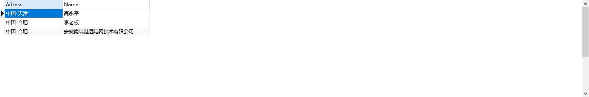
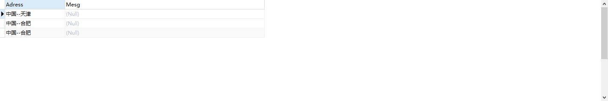
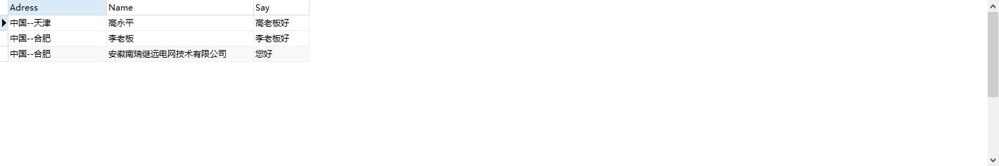

<!DOCTYPE html>


<html lang="ch">


<head>
  <meta charset="utf-8" />
   
  <meta name="keywords" content="life" />
   
  <meta name="description" content="blog for LiMingHua" />
  
  <meta name="viewport" content="width=device-width, initial-scale=1, maximum-scale=1" />
  <title>
    SQL连接符、表达式及函数 |  岛
  </title>
  <meta name="generator" content="hexo-theme-ayer">
  
  <link rel="shortcut icon" href="/favicon.ico" />
  
  
<link rel="stylesheet" href="/dist/main.css">

  
<link rel="stylesheet" href="https://cdn.jsdelivr.net/gh/Shen-Yu/cdn/css/remixicon.min.css">

  
<link rel="stylesheet" href="/css/custom.css">

  
  
<script src="https://cdn.jsdelivr.net/npm/pace-js@1.0.2/pace.min.js"></script>

  
  

  

<link rel="alternate" href="/atom.xml" title="岛" type="application/atom+xml">
</head>

</html>

<body>
  <div id="app">
    <main class="content on">
      <section class="outer">
  <article id="post-SQL连接符、表达式及函数" class="article article-type-post" itemscope
  itemprop="blogPost" data-scroll-reveal>

  <div class="article-inner">
    
    <header class="article-header">
       
<h1 class="article-title sea-center" style="border-left:0" itemprop="name">
  SQL连接符、表达式及函数
</h1>
 

    </header>
    

    
    <div class="article-meta">
      <a href="/2020/10/29/SQL%E8%BF%9E%E6%8E%A5%E7%AC%A6%E3%80%81%E8%A1%A8%E8%BE%BE%E5%BC%8F%E5%8F%8A%E5%87%BD%E6%95%B0/" class="article-date">
  <time datetime="2020-10-29T02:34:16.000Z" itemprop="datePublished">2020-10-29</time>
</a>
      
  <div class="article-category">
    <a class="article-category-link" href="/categories/%E6%8A%80%E6%9C%AF/">技术</a>
  </div>

      
      
<div class="word_count">
    <span class="post-time">
        <span class="post-meta-item-icon">
            <i class="ri-quill-pen-line"></i>
            <span class="post-meta-item-text"> Word count:</span>
            <span class="post-count">788</span>
        </span>
    </span>

    <span class="post-time">
        &nbsp; | &nbsp;
        <span class="post-meta-item-icon">
            <i class="ri-book-open-line"></i>
            <span class="post-meta-item-text"> Reading time≈</span>
            <span class="post-count">3 min</span>
        </span>
    </span>
</div>

      
    </div>
    

    
    
    <div class="tocbot"></div>


    

    
    <div class="article-entry" itemprop="articleBody">
      
      

      
      <h1 id="连接符"><a href="#连接符" class="headerlink" title="连接符"></a>连接符</h1><h2 id="连接符-1"><a href="#连接符-1" class="headerlink" title="+ 连接符"></a>+ 连接符</h2><blockquote>
<p>连接表中数据类型相同或近似的列，若数据类型完全不同，则需通过CAST表达式进行类型转换，若其中一列为NULL则结果为NULL</p>
</blockquote>
<figure class="highlight sql"><table><tr><td class="gutter"><pre><span class="line">1</span><br><span class="line">2</span><br><span class="line">3</span><br><span class="line">4</span><br><span class="line">5</span><br><span class="line">6</span><br></pre></td><td class="code"><pre><span class="line"><span class="keyword">SELECT</span> </span><br><span class="line">	TOP <span class="number">3</span></span><br><span class="line">	new_country_idName <span class="operator">+</span> <span class="string">&#x27;--&#x27;</span> <span class="operator">+</span>new_city_idName <span class="keyword">AS</span> Adress,</span><br><span class="line">	Name</span><br><span class="line"><span class="keyword">FROM</span></span><br><span class="line">	Account</span><br></pre></td></tr></table></figure>
<p></p>
<h1 id="表达式"><a href="#表达式" class="headerlink" title="表达式"></a>表达式</h1><h2 id="CAST表达式"><a href="#CAST表达式" class="headerlink" title="CAST表达式"></a>CAST表达式</h2><blockquote>
<p>转换数据类型，若数据为空则转换结果为NULL</p>
</blockquote>
<figure class="highlight sql"><table><tr><td class="gutter"><pre><span class="line">1</span><br><span class="line">2</span><br><span class="line">3</span><br><span class="line">4</span><br><span class="line">5</span><br><span class="line">6</span><br><span class="line">7</span><br><span class="line">8</span><br><span class="line">9</span><br></pre></td><td class="code"><pre><span class="line"><span class="keyword">SELECT</span> </span><br><span class="line">	TOP <span class="number">3</span></span><br><span class="line">	new_country_idName <span class="operator">+</span> <span class="string">&#x27;--&#x27;</span> <span class="operator">+</span>new_city_idName <span class="keyword">AS</span> Adress,</span><br><span class="line">	Name <span class="operator">+</span> new_age <span class="keyword">AS</span> Mesg</span><br><span class="line"><span class="keyword">FROM</span></span><br><span class="line">	Account</span><br><span class="line">	</span><br><span class="line">	</span><br><span class="line"><span class="operator">&gt;</span> [<span class="number">42000</span>] [Microsoft][ODBC Driver <span class="number">17</span> <span class="keyword">for</span> <span class="keyword">SQL</span> Server][<span class="keyword">SQL</span> Server]从数据类型 nvarchar 转换为 <span class="type">numeric</span> 时出错。 (<span class="number">8114</span>)</span><br></pre></td></tr></table></figure>
<figure class="highlight sql"><table><tr><td class="gutter"><pre><span class="line">1</span><br><span class="line">2</span><br><span class="line">3</span><br><span class="line">4</span><br><span class="line">5</span><br><span class="line">6</span><br></pre></td><td class="code"><pre><span class="line"><span class="keyword">SELECT</span> </span><br><span class="line">	TOP <span class="number">3</span></span><br><span class="line">	new_country_idName <span class="operator">+</span> <span class="string">&#x27;--&#x27;</span> <span class="operator">+</span>new_city_idName <span class="keyword">AS</span> Adress,</span><br><span class="line">	Name <span class="operator">+</span> <span class="built_in">CAST</span>(new_age <span class="keyword">AS</span> <span class="type">VARCHAR</span>(<span class="number">256</span>)) <span class="keyword">AS</span> Mesg</span><br><span class="line"><span class="keyword">FROM</span></span><br><span class="line">	Account</span><br></pre></td></tr></table></figure>
<p></p>
<h2 id="CASE表达式"><a href="#CASE表达式" class="headerlink" title="CASE表达式"></a>CASE表达式</h2><figure class="highlight sql"><table><tr><td class="gutter"><pre><span class="line">1</span><br><span class="line">2</span><br><span class="line">3</span><br><span class="line">4</span><br><span class="line">5</span><br><span class="line">6</span><br><span class="line">7</span><br><span class="line">8</span><br><span class="line">9</span><br><span class="line">10</span><br><span class="line">11</span><br></pre></td><td class="code"><pre><span class="line"><span class="keyword">SELECT</span> </span><br><span class="line">	TOP <span class="number">3</span></span><br><span class="line">	new_country_idName <span class="operator">+</span> <span class="string">&#x27;--&#x27;</span> <span class="operator">+</span>new_city_idName <span class="keyword">AS</span> Adress,</span><br><span class="line">	Name,</span><br><span class="line">	<span class="keyword">CASE</span> </span><br><span class="line">	<span class="keyword">WHEN</span> Name <span class="operator">=</span> <span class="string">&#x27;李老板&#x27;</span> <span class="keyword">THEN</span> <span class="string">&#x27;李老板好&#x27;</span></span><br><span class="line">	<span class="keyword">WHEN</span> Name <span class="operator">=</span> <span class="string">&#x27;高永平&#x27;</span> <span class="keyword">THEN</span> <span class="string">&#x27;高老板好&#x27;</span></span><br><span class="line">	<span class="keyword">ELSE</span> <span class="string">&#x27;您好&#x27;</span></span><br><span class="line">	<span class="keyword">END</span> <span class="keyword">AS</span> Say</span><br><span class="line"><span class="keyword">FROM</span></span><br><span class="line">	Account</span><br></pre></td></tr></table></figure>
<p></p>
<h1 id="函数"><a href="#函数" class="headerlink" title="函数"></a>函数</h1><blockquote>
<p>对列中某个数据进行处理并返回值</p>
</blockquote>
<h2 id="字符串操作函数"><a href="#字符串操作函数" class="headerlink" title="字符串操作函数"></a>字符串操作函数</h2><figure class="highlight sql"><table><tr><td class="gutter"><pre><span class="line">1</span><br><span class="line">2</span><br><span class="line">3</span><br><span class="line">4</span><br><span class="line">5</span><br><span class="line">6</span><br><span class="line">7</span><br><span class="line">8</span><br><span class="line">9</span><br><span class="line">10</span><br><span class="line">11</span><br><span class="line">12</span><br><span class="line">13</span><br><span class="line">14</span><br><span class="line">15</span><br><span class="line">16</span><br><span class="line">17</span><br><span class="line">18</span><br><span class="line">19</span><br><span class="line">20</span><br><span class="line">21</span><br><span class="line">22</span><br><span class="line">23</span><br><span class="line">24</span><br><span class="line">25</span><br><span class="line">26</span><br><span class="line">27</span><br><span class="line">28</span><br><span class="line">29</span><br><span class="line">30</span><br><span class="line">31</span><br><span class="line">32</span><br><span class="line">33</span><br><span class="line">34</span><br><span class="line">35</span><br><span class="line">36</span><br><span class="line">37</span><br><span class="line">38</span><br><span class="line">39</span><br><span class="line">40</span><br></pre></td><td class="code"><pre><span class="line"><span class="comment">---字符中操作函数</span></span><br><span class="line"><span class="built_in">UPPER</span>(S) 将字符串统一为大写字母</span><br><span class="line"><span class="keyword">SELECT</span> <span class="built_in">UPPER</span>(<span class="string">&#x27;asasA&#x27;</span>)   <span class="comment">--ASASA</span></span><br><span class="line"> </span><br><span class="line"><span class="built_in">LOWER</span>(S) 将字符串统一为小写字母</span><br><span class="line"><span class="keyword">SELECT</span> <span class="built_in">LOWER</span>(<span class="string">&#x27;asasA&#x27;</span>)   <span class="comment">---asasa</span></span><br><span class="line"> </span><br><span class="line">LEN(S)   返回字符串的长度</span><br><span class="line"><span class="keyword">SELECT</span> LEN(<span class="string">&#x27;中国1号&#x27;</span>) <span class="comment">--4</span></span><br><span class="line"> </span><br><span class="line">CHARINDEX(S1,S2) 返回S1在字符串S2中的位置  </span><br><span class="line"><span class="keyword">SELECT</span> CHARINDEX(<span class="string">&#x27;aa1号&#x27;</span>,<span class="string">&#x27;1111aa1号中国1号&#x27;</span>) <span class="comment">--5</span></span><br><span class="line"> </span><br><span class="line"><span class="built_in">SUBSTRING</span>(S,I,N) 在S字符串中的第I个字符起取N个字符</span><br><span class="line"><span class="keyword">SELECT</span> <span class="built_in">SUBSTRING</span>(<span class="string">&#x27;TECHNOLO&#x27;</span>,<span class="number">3</span>,<span class="number">3</span>) <span class="comment">--CHN</span></span><br><span class="line"> </span><br><span class="line"> </span><br><span class="line"><span class="keyword">SELECT</span> <span class="keyword">CONVERT</span>(<span class="type">INT</span>,<span class="string">&#x27;111&#x27;</span>)</span><br><span class="line"> </span><br><span class="line"><span class="keyword">LEFT</span>(S,N) 从字符串S左边取N个字符</span><br><span class="line"><span class="keyword">RIGHT</span>(S,N) 从字符串S右边取N个字符</span><br><span class="line"><span class="keyword">SELECT</span> <span class="keyword">RIGHT</span>(<span class="string">&#x27;00000000&#x27;</span><span class="operator">+</span><span class="string">&#x27;11&#x27;</span>,<span class="number">8</span>)</span><br><span class="line"><span class="keyword">SELECT</span> <span class="keyword">RIGHT</span>(<span class="string">&#x27;00000000&#x27;</span><span class="operator">+</span><span class="string">&#x27;2222&#x27;</span>,<span class="number">8</span>)</span><br><span class="line"><span class="keyword">SELECT</span> <span class="keyword">LEFT</span>(<span class="string">&#x27;11&#x27;</span><span class="operator">+</span><span class="string">&#x27;00000000&#x27;</span><span class="operator">+</span><span class="string">&#x27;11&#x27;</span>,<span class="number">8</span>)</span><br><span class="line"><span class="keyword">SELECT</span> <span class="keyword">LEFT</span>(<span class="string">&#x27;2222&#x27;</span><span class="operator">+</span><span class="string">&#x27;00000000&#x27;</span><span class="operator">+</span><span class="string">&#x27;2222&#x27;</span>,<span class="number">8</span>)</span><br><span class="line"> </span><br><span class="line">SPACE(N) 生成N个空格</span><br><span class="line"><span class="keyword">SELECT</span> <span class="string">&#x27;合计&#x27;</span><span class="operator">+</span>SPACE(<span class="number">2</span>)<span class="operator">+</span><span class="string">&#x27;123&#x27;</span></span><br><span class="line"> </span><br><span class="line">RTRIM(S) <span class="comment">--消除字符串左边开始或者右边开始的空格</span></span><br><span class="line">LTRIM(S) <span class="comment">--消除字符串左边开始或者右边开始的空格</span></span><br><span class="line"> </span><br><span class="line"> </span><br><span class="line"><span class="keyword">SELECT</span> RTRIM(<span class="string">&#x27;      SAMPLE   &#x27;</span>)</span><br><span class="line"><span class="keyword">SELECT</span> LTRIM(<span class="string">&#x27;      SAMPLE   &#x27;</span>)</span><br><span class="line"><span class="keyword">SELECT</span> LTRIM(RTRIM(<span class="string">&#x27;     SAMPLE   &#x27;</span>));</span><br><span class="line"> </span><br><span class="line"> </span><br><span class="line">REPLACE(STRING,ATOREPLACE,NEWSTRING) <span class="comment">--替换函数</span></span><br><span class="line"><span class="keyword">SELECT</span> REPLACE(<span class="string">&#x27;HHAAAH&#x27;</span>,<span class="string">&#x27;A&#x27;</span>,<span class="string">&#x27;S&#x27;</span>)</span><br></pre></td></tr></table></figure>
<h2 id="数学函数"><a href="#数学函数" class="headerlink" title="数学函数"></a>数学函数</h2><figure class="highlight sql"><table><tr><td class="gutter"><pre><span class="line">1</span><br><span class="line">2</span><br><span class="line">3</span><br><span class="line">4</span><br><span class="line">5</span><br><span class="line">6</span><br><span class="line">7</span><br><span class="line">8</span><br><span class="line">9</span><br><span class="line">10</span><br><span class="line">11</span><br><span class="line">12</span><br><span class="line">13</span><br><span class="line">14</span><br><span class="line">15</span><br><span class="line">16</span><br><span class="line">17</span><br><span class="line">18</span><br><span class="line">19</span><br><span class="line">20</span><br></pre></td><td class="code"><pre><span class="line"><span class="built_in">abs</span>(numeric_expr) <span class="comment">--求绝对值</span></span><br><span class="line"><span class="built_in">ceiling</span>(numeric_expr) <span class="comment">--取大于等于指定值的最小整数</span></span><br><span class="line"><span class="built_in">exp</span>(float_expr) <span class="comment">--取指数</span></span><br><span class="line"><span class="built_in">floor</span>(numeric_expr) <span class="comment">--小于等于指定值得最大整数</span></span><br><span class="line"><span class="built_in">power</span>(numeric_expr,power) <span class="comment">--返回power次方</span></span><br><span class="line">rand([int_expr]) <span class="comment">--随机数产生器</span></span><br><span class="line">round(numeric_expr,int_expr) <span class="comment">--安int_expr规定的精度四舍五入</span></span><br><span class="line">sign(int_expr) <span class="comment">--根据正数,0,负数,,返回+1,0,-1</span></span><br><span class="line"><span class="built_in">sqrt</span>(float_expr) <span class="comment">--平方根</span></span><br><span class="line"><span class="built_in">exp</span>(<span class="type">float</span> x) <span class="comment">--求e的x次幂</span></span><br><span class="line"><span class="built_in">tan</span>(<span class="type">float</span> x) <span class="comment">--计算x（弧度表示）的正切值。</span></span><br><span class="line"><span class="built_in">atan</span>(<span class="type">float</span> x) <span class="comment">--求x（弧度表示）的反正切值</span></span><br><span class="line"><span class="built_in">cos</span>(<span class="type">float</span> x) <span class="comment">--求x（弧度表示）的余弦值</span></span><br><span class="line"><span class="built_in">acos</span>(<span class="type">float</span> x) <span class="comment">--求x（弧度表示）的反余弦值</span></span><br><span class="line"><span class="built_in">sin</span>(<span class="type">float</span> x) <span class="comment">--计算x（弧度表示）的正弦值。</span></span><br><span class="line"><span class="built_in">asin</span>(<span class="type">float</span> x) <span class="comment">--求x（弧度表示）的反正弦值</span></span><br><span class="line">fabs(<span class="type">float</span> x) <span class="comment">--求浮点数x的绝对值</span></span><br><span class="line">fmod(<span class="type">float</span> x, <span class="type">float</span> y) <span class="comment">--计算x/y的余数</span></span><br><span class="line">pow(<span class="type">float</span> x, <span class="type">float</span> y) <span class="comment">--计算x的y次幂。</span></span><br><span class="line"><span class="built_in">sqrt</span>(<span class="type">float</span> x) <span class="comment">--计算x的平方根。</span></span><br></pre></td></tr></table></figure>
<h2 id="日期函数"><a href="#日期函数" class="headerlink" title="日期函数"></a>日期函数</h2><figure class="highlight sql"><table><tr><td class="gutter"><pre><span class="line">1</span><br><span class="line">2</span><br><span class="line">3</span><br><span class="line">4</span><br><span class="line">5</span><br><span class="line">6</span><br></pre></td><td class="code"><pre><span class="line">getdate() <span class="comment">--返回日期</span></span><br><span class="line">datename(datepart,date_expr) <span class="comment">--返回名称</span></span><br><span class="line">datepart(datepart,date_expr) <span class="comment">--取日期一部份</span></span><br><span class="line">datediff(datepart,date_expr1.dateexpr2) <span class="comment">--日期差</span></span><br><span class="line">dateadd(datepart,number,date_expr) <span class="comment">--返回日期加上 number</span></span><br><span class="line"><span class="keyword">day</span>(date_expr), <span class="keyword">month</span>(date_expr),<span class="keyword">year</span>(date_expr) <span class="comment">--提取date_expr中的日月年</span></span><br></pre></td></tr></table></figure>
      
      <!-- reward -->
      
      <div id="reward-btn">
        Donate
      </div>
      
    </div>
    
    
      <!-- copyright -->
      
        <div class="declare">
          <ul class="post-copyright">
            <li>
              <i class="ri-copyright-line"></i>
              <strong>Copyright： </strong>
              Copyright is owned by the author. For commercial reprints, please contact the author for authorization. For non-commercial reprints, please indicate the source.
            </li>
          </ul>
        </div>
        
    <footer class="article-footer">
      
          
<div class="share-btn">
      <span class="share-sns share-outer">
        <i class="ri-share-forward-line"></i>
        分享
      </span>
      <div class="share-wrap">
        <i class="arrow"></i>
        <div class="share-icons">
          
          <a class="weibo share-sns" href="javascript:;" data-type="weibo">
            <i class="ri-weibo-fill"></i>
          </a>
          <a class="weixin share-sns wxFab" href="javascript:;" data-type="weixin">
            <i class="ri-wechat-fill"></i>
          </a>
          <a class="qq share-sns" href="javascript:;" data-type="qq">
            <i class="ri-qq-fill"></i>
          </a>
          <a class="douban share-sns" href="javascript:;" data-type="douban">
            <i class="ri-douban-line"></i>
          </a>
          <!-- <a class="qzone share-sns" href="javascript:;" data-type="qzone">
            <i class="icon icon-qzone"></i>
          </a> -->
          
          <a class="facebook share-sns" href="javascript:;" data-type="facebook">
            <i class="ri-facebook-circle-fill"></i>
          </a>
          <a class="twitter share-sns" href="javascript:;" data-type="twitter">
            <i class="ri-twitter-fill"></i>
          </a>
          <a class="google share-sns" href="javascript:;" data-type="google">
            <i class="ri-google-fill"></i>
          </a>
        </div>
      </div>
</div>

<div class="wx-share-modal">
    <a class="modal-close" href="javascript:;"><i class="ri-close-circle-line"></i></a>
    <p>扫一扫，分享到微信</p>
    <div class="wx-qrcode">
      
    </div>
</div>

<div id="share-mask"></div>
      
      
  <ul class="article-tag-list" itemprop="keywords"><li class="article-tag-list-item"><a class="article-tag-list-link" href="/tags/SQL%E8%AF%AD%E6%B3%95/" rel="tag">SQL语法</a></li><li class="article-tag-list-item"><a class="article-tag-list-link" href="/tags/%E6%95%B0%E6%8D%AE%E5%BA%93/" rel="tag">数据库</a></li></ul>


    </footer>

  </div>

  
  
  <nav class="article-nav">
    
      <a href="/2020/10/29/SQL%E6%89%A7%E8%A1%8C%E9%A1%BA%E5%BA%8F/" class="article-nav-link">
        <strong class="article-nav-caption">上一篇</strong>
        <div class="article-nav-title">
          
            SQL执行顺序
          
        </div>
      </a>
    
    
      <a href="/2020/10/29/%E8%81%9A%E5%90%88%E5%87%BD%E6%95%B0/" class="article-nav-link">
        <strong class="article-nav-caption">下一篇</strong>
        <div class="article-nav-title">聚合函数</div>
      </a>
    
  </nav>


  

  
  
<!-- valine评论 -->
<div id="vcomments-box">
    <div id="vcomments">
    </div>
</div>
<script src="//cdn1.lncld.net/static/js/3.0.4/av-min.js"></script>
<script src='https://cdn.jsdelivr.net/npm/valine@1.3.10/dist/Valine.min.js'></script>
<script>
    new Valine({
        el: '#vcomments',
        app_id: '3ca37UwilGw72aqkh37fe6U5-gzGzoHsz',
        app_key: 'owV6K1tLvndEdJMFJ3prXXDV',
        path: window.location.pathname,
        notify: 'false',
        verify: 'false',
        avatar: 'monsterid',
        placeholder: '给我的文章加点评论吧~',
        recordIP: true
    });
    const infoEle = document.querySelector('#vcomments .info');
    if (infoEle && infoEle.childNodes && infoEle.childNodes.length > 0) {
        infoEle.childNodes.forEach(function (item) {
            item.parentNode.removeChild(item);
        });
    }
</script>
<style>
    #vcomments-box {
        padding: 5px 30px;
    }

    @media screen and (max-width: 800px) {
        #vcomments-box {
            padding: 5px 0px;
        }
    }

    #vcomments-box #vcomments {
        background-color: #fff;
    }

    .v .vlist .vcard .vh {
        padding-right: 20px;
    }

    .v .vlist .vcard {
        padding-left: 10px;
    }
</style>

  

  
  
  
  
  

</article>
</section>
      <footer class="footer">
  <div class="outer">
    <ul>
      <li>
        Copyrights &copy;
        2020-2021
        <i class="ri-heart-fill heart_icon"></i> 李明华
      </li>
    </ul>
    <ul>
      <li>
        
      </li>
    </ul>
    <ul>
      <li>
        
        
        <span>
  <span><i class="ri-user-3-fill"></i>Visitors:<span id="busuanzi_value_site_uv"></span></s>
  <span class="division">|</span>
  <span><i class="ri-eye-fill"></i>Views:<span id="busuanzi_value_page_pv"></span></span>
</span>
        
      </li>
    </ul>
    <ul>
      
    </ul>
    <ul>
      <li>
        <!-- cnzz统计 -->
        
        <script type="text/javascript" src='https://s9.cnzz.com/z_stat.php?id=1278069914&amp;web_id=1278069914'></script>
        
      </li>
    </ul>
  </div>
</footer>
      <div class="float_btns">
        <div class="totop" id="totop">
  <i class="ri-arrow-up-line"></i>
</div>

<div class="todark" id="todark">
  <i class="ri-moon-line"></i>
</div>

      </div>
    </main>
    <aside class="sidebar on">
      <button class="navbar-toggle"></button>
<nav class="navbar">
  
  <ul class="nav nav-main">
    
    <li class="nav-item">
      <a class="nav-item-link" href="/">主页</a>
    </li>
    
    <li class="nav-item">
      <a class="nav-item-link" href="/archives">归档</a>
    </li>
    
    <li class="nav-item">
      <a class="nav-item-link" href="/categories">分类</a>
    </li>
    
    <li class="nav-item">
      <a class="nav-item-link" href="/tags">标签</a>
    </li>
    
    <li class="nav-item">
      <a class="nav-item-link" href="/photos">相册</a>
    </li>
    
    <li class="nav-item">
      <a class="nav-item-link" href="/2020/04/17/aboutMe/">关于我</a>
    </li>
    
  </ul>
</nav>
<nav class="navbar navbar-bottom">
  <ul class="nav">
    <li class="nav-item">
      
      <a class="nav-item-link nav-item-search"  title="Search">
        <i class="ri-search-line"></i>
      </a>
      
      
      <a class="nav-item-link" target="_blank" href="/atom.xml" title="RSS Feed">
        <i class="ri-rss-line"></i>
      </a>
      
    </li>
  </ul>
</nav>
<div class="search-form-wrap">
  <div class="local-search local-search-plugin">
  <input type="search" id="local-search-input" class="local-search-input" placeholder="Search...">
  <div id="local-search-result" class="local-search-result"></div>
</div>
</div>
    </aside>
    <script>
      if (window.matchMedia("(max-width: 768px)").matches) {
        document.querySelector('.content').classList.remove('on');
        document.querySelector('.sidebar').classList.remove('on');
      }
    </script>
    <div id="mask"></div>

<!-- #reward -->
<div id="reward">
  <span class="close"><i class="ri-close-line"></i></span>
  <p class="reward-p"><i class="ri-cup-line"></i>请我喝杯咖啡吧~</p>
  <div class="reward-box">
    
    <div class="reward-item">
      
      <span class="reward-type">支付宝</span>
    </div>
    
    
    <div class="reward-item">
      
      <span class="reward-type">微信</span>
    </div>
    
  </div>
</div>
    
<script src="/js/jquery-2.0.3.min.js"></script>


<script src="/js/lazyload.min.js"></script>


<script>
  try {
    var typed = new Typed("#subtitle", {
      strings: ['面朝大海，春暖花开', '愿你一生努力，一生被爱', '想要的都拥有，得不到的都释怀'],
      startDelay: 0,
      typeSpeed: 200,
      loop: true,
      backSpeed: 100,
      showCursor: true
    });
  } catch (err) {
  }

</script>


<script src="/js/tocbot.min.js"></script>

<script>
  // Tocbot_v4.7.0  http://tscanlin.github.io/tocbot/
  tocbot.init({
    tocSelector: '.tocbot',
    contentSelector: '.article-entry',
    headingSelector: 'h1, h2, h3, h4, h5, h6',
    hasInnerContainers: true,
    scrollSmooth: true,
    scrollContainer: 'main',
    positionFixedSelector: '.tocbot',
    positionFixedClass: 'is-position-fixed',
    fixedSidebarOffset: 'auto'
  });
</script>


<script src="https://cdn.jsdelivr.net/npm/jquery-modal@0.9.2/jquery.modal.min.js"></script>
<link rel="stylesheet" href="https://cdn.jsdelivr.net/npm/jquery-modal@0.9.2/jquery.modal.min.css">
<script src="https://cdn.jsdelivr.net/npm/justifiedGallery@3.7.0/dist/js/jquery.justifiedGallery.min.js"></script>

<script src="/dist/main.js"></script>


<!-- Root element of PhotoSwipe. Must have class pswp. -->
<div class="pswp" tabindex="-1" role="dialog" aria-hidden="true">

    <!-- Background of PhotoSwipe. 
         It's a separate element as animating opacity is faster than rgba(). -->
    <div class="pswp__bg"></div>

    <!-- Slides wrapper with overflow:hidden. -->
    <div class="pswp__scroll-wrap">

        <!-- Container that holds slides. 
            PhotoSwipe keeps only 3 of them in the DOM to save memory.
            Don't modify these 3 pswp__item elements, data is added later on. -->
        <div class="pswp__container">
            <div class="pswp__item"></div>
            <div class="pswp__item"></div>
            <div class="pswp__item"></div>
        </div>

        <!-- Default (PhotoSwipeUI_Default) interface on top of sliding area. Can be changed. -->
        <div class="pswp__ui pswp__ui--hidden">

            <div class="pswp__top-bar">

                <!--  Controls are self-explanatory. Order can be changed. -->

                <div class="pswp__counter"></div>

                <button class="pswp__button pswp__button--close" title="Close (Esc)"></button>

                <button class="pswp__button pswp__button--share" style="display:none" title="Share"></button>

                <button class="pswp__button pswp__button--fs" title="Toggle fullscreen"></button>

                <button class="pswp__button pswp__button--zoom" title="Zoom in/out"></button>

                <!-- Preloader demo http://codepen.io/dimsemenov/pen/yyBWoR -->
                <!-- element will get class pswp__preloader--active when preloader is running -->
                <div class="pswp__preloader">
                    <div class="pswp__preloader__icn">
                        <div class="pswp__preloader__cut">
                            <div class="pswp__preloader__donut"></div>
                        </div>
                    </div>
                </div>
            </div>

            <div class="pswp__share-modal pswp__share-modal--hidden pswp__single-tap">
                <div class="pswp__share-tooltip"></div>
            </div>

            <button class="pswp__button pswp__button--arrow--left" title="Previous (arrow left)">
            </button>

            <button class="pswp__button pswp__button--arrow--right" title="Next (arrow right)">
            </button>

            <div class="pswp__caption">
                <div class="pswp__caption__center"></div>
            </div>

        </div>

    </div>

</div>

<link rel="stylesheet" href="https://cdn.jsdelivr.net/npm/photoswipe@4.1.3/dist/photoswipe.min.css">
<link rel="stylesheet" href="https://cdn.jsdelivr.net/npm/photoswipe@4.1.3/dist/default-skin/default-skin.min.css">
<script src="https://cdn.jsdelivr.net/npm/photoswipe@4.1.3/dist/photoswipe.min.js"></script>
<script src="https://cdn.jsdelivr.net/npm/photoswipe@4.1.3/dist/photoswipe-ui-default.min.js"></script>

<script>
    function viewer_init() {
        let pswpElement = document.querySelectorAll('.pswp')[0];
        let $imgArr = document.querySelectorAll(('.article-entry img:not(.reward-img)'))

        $imgArr.forEach(($em, i) => {
            $em.onclick = () => {
                // slider展开状态
                // todo: 这样不好，后面改成状态
                if (document.querySelector('.left-col.show')) return
                let items = []
                $imgArr.forEach(($em2, i2) => {
                    let img = $em2.getAttribute('data-idx', i2)
                    let src = $em2.getAttribute('data-target') || $em2.getAttribute('src')
                    let title = $em2.getAttribute('alt')
                    // 获得原图尺寸
                    const image = new Image()
                    image.src = src
                    items.push({
                        src: src,
                        w: image.width || $em2.width,
                        h: image.height || $em2.height,
                        title: title
                    })
                })
                var gallery = new PhotoSwipe(pswpElement, PhotoSwipeUI_Default, items, {
                    index: parseInt(i)
                });
                gallery.init()
            }
        })
    }
    viewer_init()
</script>


<script src="/js/busuanzi-2.3.pure.min.js"></script>


<script type="text/javascript" src="https://js.users.51.la/20544303.js"></script>


<!-- 复制 -->

  
<link rel="stylesheet" href="/css/clipboard.css">

  <script src="https://cdn.jsdelivr.net/npm/clipboard@2/dist/clipboard.min.js"></script>
<script>
  function wait(callback, seconds) {
    var timelag = null;
    timelag = window.setTimeout(callback, seconds);
  }
  !function (e, t, a) {
    var initCopyCode = function(){
      var copyHtml = '';
      copyHtml += '<button class="btn-copy" data-clipboard-snippet="">';
      copyHtml += '<i class="ri-file-copy-2-line"></i><span>COPY</span>';
      copyHtml += '</button>';
      $(".highlight .code pre").before(copyHtml);
      $(".article pre code").before(copyHtml);
      var clipboard = new ClipboardJS('.btn-copy', {
        target: function(trigger) {
          return trigger.nextElementSibling;
        }
      });
      clipboard.on('success', function(e) {
        let $btn = $(e.trigger);
        $btn.addClass('copied');
        let $icon = $($btn.find('i'));
        $icon.removeClass('ri-file-copy-2-line');
        $icon.addClass('ri-checkbox-circle-line');
        let $span = $($btn.find('span'));
        $span[0].innerText = 'COPIED';
        
        wait(function () { // 等待两秒钟后恢复
          $icon.removeClass('ri-checkbox-circle-line');
          $icon.addClass('ri-file-copy-2-line');
          $span[0].innerText = 'COPY';
        }, 2000);
      });
      clipboard.on('error', function(e) {
        e.clearSelection();
        let $btn = $(e.trigger);
        $btn.addClass('copy-failed');
        let $icon = $($btn.find('i'));
        $icon.removeClass('ri-file-copy-2-line');
        $icon.addClass('ri-time-line');
        let $span = $($btn.find('span'));
        $span[0].innerText = 'COPY FAILED';
        
        wait(function () { // 等待两秒钟后恢复
          $icon.removeClass('ri-time-line');
          $icon.addClass('ri-file-copy-2-line');
          $span[0].innerText = 'COPY';
        }, 2000);
      });
    }
    initCopyCode();
  }(window, document);
</script>


    
    <div id="music">
    
    
    
    <iframe frameborder="no" border="1" marginwidth="0" marginheight="0" width="200" height="52"
        src="//music.163.com/outchain/player?type=2&id=480654&auto=1&height=32"></iframe>
</div>

<style>
    #music {
        position: fixed;
        right: 15px;
        bottom: 0;
        z-index: 998;
    }
</style>
    
  </div>
</body>

</html>